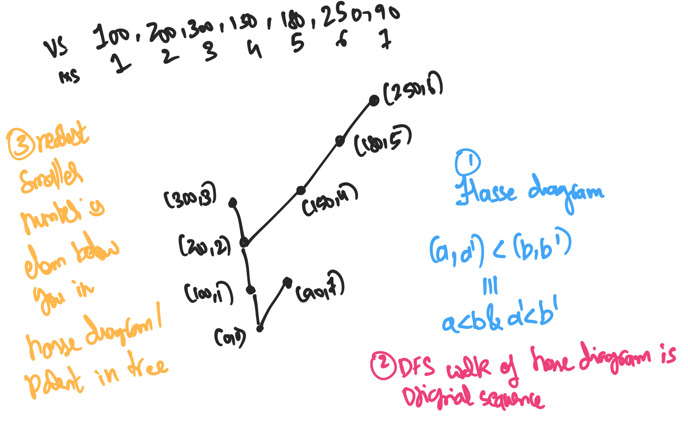

§ The algebraic structure of the 'nearest smaller number' question
The nearest smaller number problem
can be solved by using a stack along with an observation of monotonicity.
This is explained in the USACO guide to stacks in the Gold section.
What I find interesting is that we need a stack. Why does a stack show up?
Stacks are usually related to a DFS on some appropriate object. What's that object?
And can we gain insight into when we need to use a stack based on this?
The idea is that we are trying to construct the Hasse diagram of the
original array, treated as a poset with ground set P≡{(val,ix):arr[ix]=val}
with the ordering (a1,a2)<(b1,b2)⟺a1<b1∧a2<b2.
So we have this hasse diagram, which interestingly is going to be a tree.
this need not always be the case! consider the divisiblity poset with the
elements 3,5,15.
Then the answer is to print the parent of each node in the tree as the parent
in the Hasse diagram is going to be closest number that is smaller than it.
Why does this Hasse diagram show up? What is the relationship between this problem,
and that of Graham Scan which also
uses a similar technique of maintaining a stack. Does this also have a hasse
diagram associated to it? or a DFS tree?
